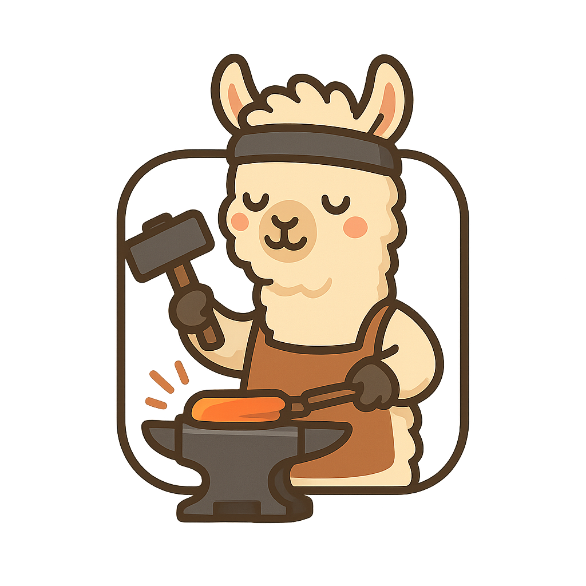

SWE-smith
Scaling Data for Software Engineering Agents
Home • April 30, 2025
by John Yang
A rethinking of how to create software tasks for training AI.
Motivations
Progress in AI for software engineering over the past year has been incredibly exciting. The rapid development of agentic SWEs has been tracked faithfully by the SWE-bench benchmark and the Verified subset in particular.
For well over a year, I've been the core maintainer of SWE-bench's leaderboard, giving me a front row seat to the show.

Early improvements were driven by creating better inference frameworks for interacting with code, such as SWE-agent, OpenHands, and Agentless.
Since late last summer, that trend has shifted towards better base models. For the SWE-bench team and myself, Claude 3.5 Sonnet was a big moment, eclipsing 50% on SWE-bench Verified.
The attention of the community followed. For open source to play catch-up, we need data and execution environments.
More than before, GitHub issues on SWE-bench popped up requesting more documentation on how to re-do SWE-bench for new repositories. (see 1, 2, 3, 4, 5 + many, many more)
In early 2025, we've seen signals of success for training open source SWE-agents. Prior and concurrent works such as SWE-gym, SWE-RL, and R2E-gym have shown how, with enough data, simple SFT or GRPO objectives lead to promising performance gains. SWE-gym trains on 491 agent trajectories, R2E-gym on 3200. SWE-RL, which is non-agentic, trains on 11M PRs synthesized into reasoning traces. Their single run % resolve rates are 20.6%, 34.4%, and 41% respectively.
However, the foundation to all this progress - collecting training data for AI software engineers - remains a significant pain point.
What's so hard about SWE-bench?
As a reminder, here's how we built SWE-bench.

You scrape a bunch of PRs and convert them to candidate task instances. Then, you create an execution environment per candidate and run the tests, checking for at least 1 "Fail to Pass" test (the test failed before the PR, and passed after).
This last step, creating the execution environment, is tough.
- Human Labor:
Each task instance is from a unique commit for that repository.
Figuring out how to install the repository and run the tests
requires a lot of manual labor.
Imagine, you find the installion docs or contributing guidelines. After reading it, you try it out. Sometimes it works, most of the time it doesn't. Why? Because the commit is from 2021, and the latest version of some dependencies are not compatible. So you then look up the package on PyPI and install the version closest to the commit date. Great, that worked! But uh-oh, "libGl.so.1: cannot open shared object file", what does that mean? Ok, turns out you need to apt-get some packages. I'm done! Wait. What?? Why does this version of the package not exist anymore? Repeat 5 to ∞ times, and at best, you have one execution environment. For one task instance. And 45 minutes have passed.
😫
Again, that's at best. I cannot tell you how many repo's I've given up on figuring out when putting together SWE-bench and SWE-bench Multimodal. The iteration cycles were worse for non-Python.
There are of course, ways you can be clever about this. Notably, in SWE-bench, per repository, we group the task instances with the same version number and define repository/version specific specs.
But the problem remains at large. When we built SWE-bench, scraping PRs took 1 week end-to-end (code + collection). Execution environments took 10 weeks of trial and error. And then another 8 weeks overhauling the existing codebase for SWE-bench Verified. To this day, we're still debugging environment issues. Even with SWE-bench as precedent, SWE-gym reports taking 200 human hours.
And as humans, we only have so much patience. No SWE-bench style training set captures more than 11 repositories. - Storage: SWE-bench creates a Docker image per task instance. Across SWE-bench, SWE-gym, and R2E-gym, an image is on average 1GB - 3GB each. So with just 1000 tasks, you're talking at least 1TB of storage. That's a lot. To use the dataset, it's extremely time consuming to re-build the images, and not everyone has TBs of readily available storage.
The Key Idea
After releasing SWE-bench Multimodal last September, for several weeks, I tried a bunch of ideas around automating more of SWE-bench's collection process.
While it's not impossible to combine good heuristics with LMs to automate some parts, I became increasingly convinced that the fundamental approach of SWE-bench could be reworked.
One thought that stood out to me was that while dependencies and installation procedures change over time, the codebase itself is typically "linear". Code that was written in 2021 is usually still there in 2025. PRs are merged at different times; their effect, however, remains present in the latest version of the codebase.
So, to create a SWE-bench style task instance, instead of reverting the codebase to the PR's commit, why not undo the PR in the latest version of the code?
This was the start of SWE-smith, a rethinking of how to create software tasks for training AI.
SWE-bench identifies task instances first, then attempts to build an environment for it.
Instead, define the execution environment first, then synthesize task instances within the environment.
So what does this mean in practice?
Given a repository, let's start by determine the installation + testing specifications and create the Docker image.
Then, given just this commit/version of the codebase, use automatic methods to change code in ways that are likely to break existing tests.
The implications of this are meaningful. This means...
- Significantly reduced human labor: No more figuring out to install a repo correctly for every month of the past 5 years.
- Significantly reduced storage: One docker image per repository, not per task instance. For 1000 tasks, 1GB of storage, not 1TB.
- New ways to create bugs: To break existing tests, we can revert PRs. Or you could ask an LM to write bugs into the code! Or maybe, remove a function entirely. Or if you have two bugs, merge them into a single, harder bug? The possibilities are suddenly endless.


Concretely, the workflow is as follows:
To create an execution environment for a repo, I prompt SWE-agent to install the codebase and run the tests.
It then takes me 7 minutes to read SWE-agent's work, figure out the right steps, and build the Docker image for that repository.
Then, using the bug generation methods shown above, I can effortlessly create 100s to 1000s of task instances per repo.
Deliverables & Great Expectations
Using SWE-smith, we create 50k task instances across 128 Python repositories (and counting...). Both numbers are an order of magnitude greater than any existing dataset.
We train Qwen 2.5 32B Coder Instruct on 5000 expert trajectories generated from running SWE-agent + Claude 3.7 Sonnet on a subset of SWE-smith. Our model, SWE-agent-LM-32B, achieves a 40% single run resolve rate on SWE-bench Verified, #1 for open source agentic coding models.